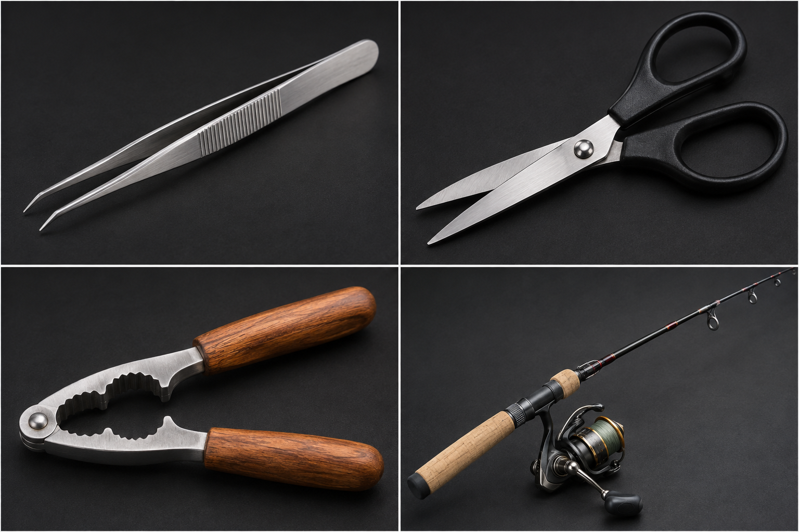

MISSION 02 · HEBEL-DETEKTIVE
Welche Hebelart ist es?
Ordnet die vier Gegenstände einem einseitigen oder zweiseitigen Hebel zu:
Pinzette, Schere, Nussknacker und Angel.
Frage: Welche Hebelart liegt bei jedem Gegenstand vor?
Pinzette, Schere, Nussknacker und Angel.
Frage: Welche Hebelart liegt bei jedem Gegenstand vor?
